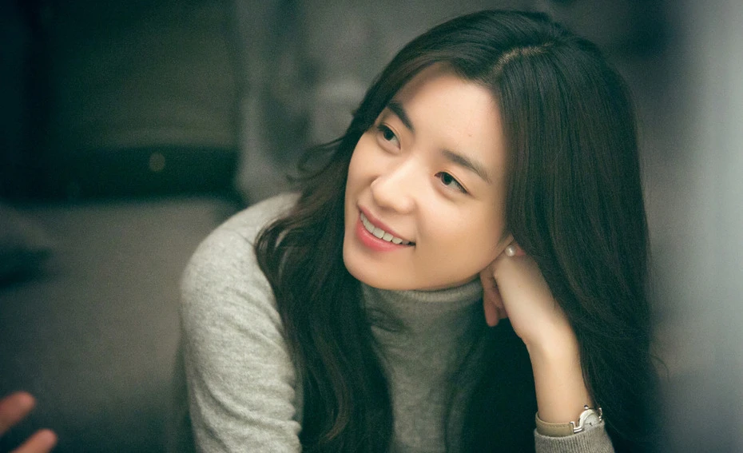
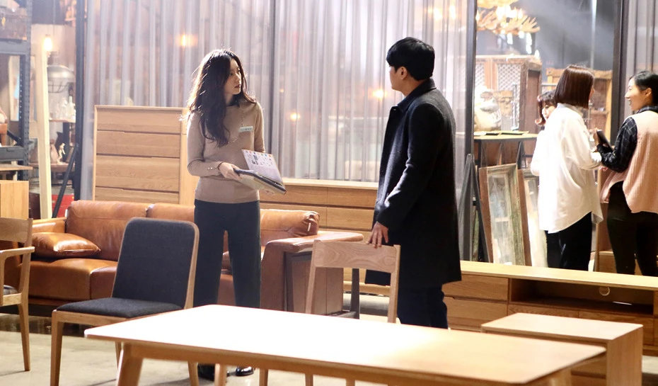

겨울이면 여전히 사랑받는 ‘뷰티 인사이드’ 한효주 룩
겨울이 코앞에 다가온 이맘때면 문득 떠오르는 영화가 있습니다. 2015년 개봉한 <뷰티 인사이드>인데요. 겉모습과 상관없이, 진실한 마음 그 자체를 사랑한 이들의 이야기입니다.
한효주가 연기한 주인공 ‘홍이수’
한효주가 연기한 주인공 ‘홍이수’는 가구 편집매장의 숍 마스터로 세심하고 따뜻한 성격의 소유자인데요, 영화 속 그녀의 패션이 깊은 인상을 남겼습니다. 영화가 개봉한 지 9년이 지났지만, 여전히 사랑받는 스타일이죠. 심플한 홍이수 룩은 이번 시즌을 관통하는 드뮤어 트렌드와도 결이 비슷합니다. 클래식한 겨울 룩의 정석! 영화 속 홍이수의 룩을 더 자세히 살펴볼까요?
홍이수는 주로 무채색이나 차분한 톤의 옷을 즐겨 입어요. 그녀의 옷장은 디테일이 적은 셔츠와 스웨터, 스커트 등으로 채워져 있죠. 홍이수의 자연스러운 갈색 머리와 잘 어울리는 짙은 갈색이나 베이지색 스웨터를 자주 볼 수 있습니다.
관련기사
최신기사
추천기사
인기기사
PEOPLE NOW
지금, 보그가 주목하는 인물